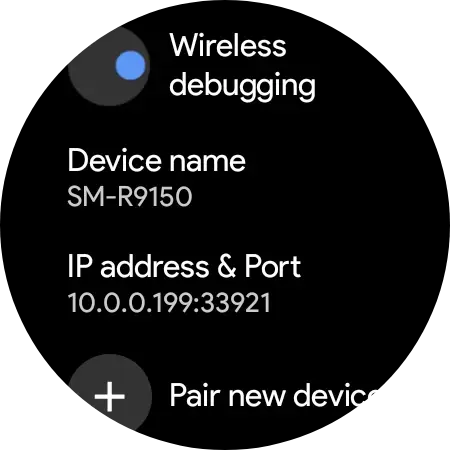
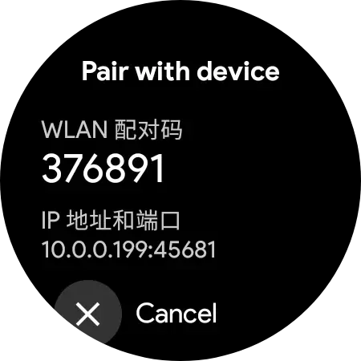

Wearos 工具箱从入门到上手：连上手表、管文件、调表盘一套通
刚入坑 Wear OS 想折腾却找不到门路？本文跟着一步步把工具箱用起来，从开调试模式、无线连接手表，到浏览存储、编辑日志、模拟电量测试表盘，全是能直接抄的操作。
Wearos 是一款面向 Wear OS 手表的综合性调试工具箱，它的官网上把 ADB 连接、文件管理、应用安装、系统信息查看这些原本需要敲命令行的活儿，全部搬到了手机界面上。对想折腾自己手表的人来说，这是绕不开的第一站。
写完这篇教程，你将能够：用手机连上你的 Wear OS 手表、在手机屏幕上浏览手表存储里的文件、直接编辑手表内的文本文件、临时模拟任意电量来测试表盘表现。

准备工作
在动手之前，先确认这几样东西都齐了：
- 一台运行 Wear OS 3 或更新版本的手表（早期 Android Wear 2.0 也能试）
- 一部 Android 手机（iOS 不行，工具箱目前只做了 Android 客户端）
- 手表和手机要连在同一个 Wi-Fi 下——无线调试走局域网，不共享网络的话 ADB 找不到手表
- Wearos 工具箱如果还没装，直接从官方下载拿安装包就行
如果你的手表是 TicWatch、Galaxy Watch 或 Pixel Watch，都是主流适配型号，开发者模式打开路径和连接流程没有额外厂商门槛。
第一步：在手表上打开开发者模式
Wear OS 的开发者模式藏得很深，不会在设置界面里直接露出来。所有品牌的操作都是同一个套路：
- 手表上打开 设置 → 系统 → 关于手表
- 找到 版本号 那一行，连续点 7 次
- 屏幕上会弹一句"您已处于开发者模式"——完成
注意：版本号不在屏幕最上方，通常在「系统版本」或「软件版本」的下面，往下翻几屏才能看到。
开发者模式开启后，回到 设置 → 开发者选项，把里面这两个开关打开：
- ADB 调试（总开关，不开的话后面什么都连不上）
- 通过 WLAN 调试（无线调试的核心开关，用蓝牙调试稳定性差速度慢，直接跳过）
如果你的手表系统版本比较新，无线调试可能叫 无线调试 而不是 "通过 WLAN 调试"，功能是一样的。
第二步：用 Wearos 工具箱连接手表
这是最关键也最容易翻车的一步——连接不上，后面所有功能都是摆设。
方式 A：手动填 IP + 配对码（推荐新手）
手表开发者选项里打开无线调试后，会显示一个 IP 地址 + 端口号（格式类似 192.168.1.23:5555）和一个 配对码。
在 Wearos 工具箱里点「添加设备」或「无线调试」，分别填入：
- IP 地址：抄手表上显示的那个
- 配对码：手表上的 6 位数字
填完点连接，手表屏幕上可能会弹出一个"允许调试吗"的确认框——勾上"永远允许"然后点确定。
方式 B：自动扫描（偶尔会失败）
有些版本的工具箱支持自动扫描同一 Wi-Fi 下的 Wear OS 设备。如果扫得到手表，直接点一下列表里的条目就能配对。但我实测下来扫描成功率不是 100%，扫不到就老老实实用方式 A 手动填，花不了 10 秒。
连上了没有？
工具箱界面上如果显示一个绿色的"已连接"状态，并且跳出手表的型号、系统版本、电池电量等信息，就说明 ADB 通道打通了。这时候手表屏幕顶部状态栏通常会出现一个绿色的"ADB 调试中"提示条——不是故障，是连接正常的标志。

第三步：用文件管理功能看看手表里有什么
连接成功后，工具箱底部功能面板里有一个 文件管理 入口。点进去你会看到一个和手机文件管理器几乎一样的界面，可以逐级浏览手表的整个存储。
手表的存储大致分四个区域，你大概率只会跟其中两个打交道：
| 路径 | 内容 | 你该不该碰 |
|---|---|---|
| /sdcard | 用户可读写的主要区域 | 随便逛，下载的 APK、音乐、截图都在这儿 |
/sdcard/Android/data/<包名> | 各个应用的数据目录 | 谨慎操作，删错会把应用的缓存清掉 |
| /system | 系统分区 | 只读，别动 |
| /data/data | 应用私有目录 | 通常没有权限访问，跳过 |
实际操作：确认 APK 推送有没有成功
假设你之前已经往手表里推送过一个 APK，现在想确认它到底进没进手表。打开文件管理，进入 /sdcard/Download/ 目录，找一下目标文件名。看到它稳稳躺在列表里，说明推送成功了；如果列表空的或者没那个文件，就得回去检查推送那一步是不是走错了。
另一个高频操作是看截图。手表上用组合键（通常是电源键 + 上键）截的图会存在 /sdcard/Pictures/Screenshots/ 里。工具箱的文件管理界面里长按某个截图，就能直接把它拉回手机，不用再手动传输。
第四步：直接在手机上编辑手表里的文件
这是我最喜欢的功能——之前想看手表里的崩溃日志或者改个小配置，得先拉回电脑、用文本编辑器打开、改完再推回去，来回四五步。现在用 Wearos 的文本编辑器功能，整个流程在手机上就能搞定。
解锁编辑器（捐赠权益）
先说明一下：文本编辑器是工具箱的捐赠功能。如果界面上这个入口灰着不让点，说明你用的是免费版，需要捐赠解锁才能用。其他基础功能（文件管理、应用安装）不花钱也能用。
操作步骤
- 工具箱功能面板里找到 文本编辑器 入口，点它
- 弹出一个简化版的文件浏览器——和文件管理是同一套目录树，只是界面更简洁
- 浏览到你想编辑的文件位置。常见的几个路径：
- 应用崩溃日志：
/sdcard/Android/data/<包名>/files/logs/ - 应用配置文件：
/sdcard/Android/data/<包名>/files/config.json - shell 脚本：
/sdcard/Download/脚本.sh
- 选中文件后，手机屏幕上会弹出一个类似记事本的编辑界面
- 修改内容 → 点保存 → 变更直接写回手表的源文件
注意事项
- 编辑器只能处理纯文本文件（
.txt、.log、.json、.sh这些）。二进制文件（图片、APK）别拿它打开，会乱码甚至损坏文件 - 大文件（超过几 MB）打开可能卡顿甚至崩溃，手表屏幕小也不适合看太长的日志
- 保存后立即生效，没有撤销机制。改配置文件前先用文件管理功能复制一份原文件当备份
一个真实场景：我装在手表上的某个表盘应用反复闪退，想看崩溃日志。之前用 adb pull 把日志拉到电脑上看，现在直接在手机上打开 /sdcard/Android/data/表盘应用包名/files/logs/ 里的最新日志文件，翻两下就定位到了问题行——整个过程不到两分钟。
第五步：模拟电量测试表盘
很多表盘会根据电量显示不同的状态——低电量变红色边框、满电量显示绿色光晕、电量低于某个阈值时自动隐藏秒针。但真把电耗到 20% 以下再看太麻烦了，而且可能错过一些临界值。
Wearos 工具箱的 电量模拟 功能就是为此而生的。它能临时让手表系统显示任意电量值（1% 到 100%），不会改变真实电池状态，手表重启后自动恢复。
操作
- 工具箱电池工具面板里找到 电量模拟 入口
- 输入你想让手表显示的电量值，或者拖动滑动条选
- 点「应用」——手表上的电量显示会立刻变成目标值
- 打开目标表盘，观察不同电量下的显示变化
三个实用测试点
- 低电量警戒色：设到 14% 和 15%（很多表盘在 15% 切换警戒色），看颜色是否正确切换
- 低电量隐藏元素：设到 5% 和 6%，看表盘是不是按预期隐藏了秒针或分钟刻度
- 满电量显示：设到 99% 和 100%，确认没有满电量专属的 bug
测试完想恢复真实电量？最快的方式是直接重启手表，或者在工具箱里找「还原真实电量」按钮点一下。电量模拟只是工具箱众多小工具之一，其他功能可以在 Wearos文档 里找到详细说明。
常见卡点与解法
卡点一：无线调试始终连不上
症状：填了 IP 和配对码，点连接后一直在转圈，最终超时。
排查顺序：
- 确认手表和手机在同一个 Wi-Fi 下——用手表打开一个网页（设置 → Wi-Fi → 已连接网络，打开详情可以看 IP），跟手机的 Wi-Fi IP 前三位数对比一下，不一致就说明不在同一网络
- 确认手表上的无线调试开关真的开了——有时候重启手表会把它自动关掉
- IP 地址会不会变？TicWatch 每次重启或切换 Wi-Fi 后 IP 都可能变。工具箱建议开启"记住设备 IP"，但换网络后需要手动更新。配对码方式连接的话，IP 变了只改 IP 部分、端口保持不变就行
- 配对码是不是过期了？有些手表的配对码会定期刷新，用了超过一分钟就得重新看一眼
卡点二：文件管理界面一片空白
症状：连接正常，但点文件管理进去看不到任何目录。
解法：大概率是 ADB 权限没给全。回到手表的开发者选项，把 ADB 调试关掉等 3 秒再打开，然后在手机工具箱里断开连接、重新配对一次。过程中手表屏幕上可能会弹好几个"允许调试"的确认框，每个都要勾上"永远允许"。
卡点三：文本编辑器打开后乱码
症状：选中文件打开，看到一堆看不懂的符号。
解法：要么是文件编码太少见（UTF-8、GBK 通常没问题，其他编码可能显示异常），要么是这个文件本来就不是纯文本——二进制文件绝对不能用文本编辑器打开，赶紧关掉然后从文件管理里把原文件恢复回来。
进阶一句话
搞定这些基础操作之后，往下还能玩什么？可以试试用工具箱冻结不需要的系统应用（Mobvoi 自家商店、健康应用用不上可以冻，但 Wear OS 核心服务、表盘服务、蓝牙通知通道绝对别动）、往手表里推送第三方表盘文件、甚至在手表上跑个小型 shell 脚本。方向很多，先把这五步跑通再慢慢探索。
这套 Wear OS 调试生态在国内的资料相对零散，我把整理好的完整说明同步到了三个仓库，方便大家按需查阅：GitHub 上的版本更新最及时，Gitee 适合国内网络环境访问，GitCode 作为多一份备份以防其中某个源站临时不可用。